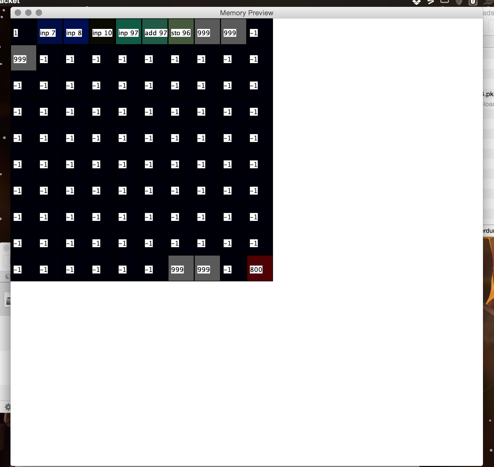

The CARDIAC Emulator Documentation
1 How The CARDIAC Emulator Works
The CARIDAC Emulator is useful to illustrate how computation works in a real life computor, without going into the rigamarole of binary and hex, or the many layers of complicated memory and operating system, but instead just using this simple and abstract environment to teach people about computors.
1.1 Who is this Document For?
Students may read this too. This document is just more focused on the questions the teacher may have while teaching using this equitment.
1.2 What Goes on Inside...
If you wish to participate in the development of this project, check out the source code, beocuse this is all I will say about implementation details here.
1.3 Binary vs. Decimal?
If you want to teach how computors work to people unfarmilliar with that topic previously, it will be long, hard, and tedious to make them fluent enough in binary for it to be helpful. Especially since assembly language uses hex or decimal for numbers, and there are many binary to hex or binary to decimal or hex to binary or hex to decimal converters out there already, without doing it by hand. This is why we chose to use decimal for the CARDIAC instead.
2 The CARDIAC Assembly Language Interface
This document details how to use the assembly language interface functions that the CARDIAC Emulator supplies.
2.1 The Assembly Language
Direct addressing Mode
Indirect addressing Mode
Literal Mode
2.1.1 The Direct Addressing Mode
add 7 |
nom |
2.1.2 The Indirect Addressing Mode
idi |
add 7 |
nom |
add 88 |
Label |
| Meaning |
ACC |
| The contents of the accumulator |
PC |
| The contents of the program counter |
2.1.3 The Literal Mode
lit |
add 88 |
nom |
2.1.4 The Commands
Command |
| Action |
| Opcode |
INP |
| INPut from input slot |
| 1 |
CLA |
| CLear and input from memory to Accumulator |
| 2 |
ADD |
| ADD from memory to accumulator |
| 3 |
TAC |
| Test ACcumulator and jump to specified memory address if negative. |
| 4 |
SFT |
| ShiFT Accumulator by specified bits |
| 5 |
OUT |
| OUTput memory location to output slot |
| 6 |
STO |
| STOre accumulator in memory |
| 7 |
SUB |
| SUBtract memory from accumulator |
| 8 |
JMP |
| JuMP to memory location |
| 9 |
HRS |
| Halt and reset |
| 10 |
Notice that the HRS instruction has a two digit opcode, therefor leaving only one digit for the argument. Luckely, it takes no arguments.
2.2 Without the Visualizer
To run assembly language without the memory visualizer, using the Racket REPL, enter:
(run-cardiac-assembly |
<start-mem> |
<code> |
[<input> 0] |
[<output> 0] |
[<acc> 0] |
[<starting-memory-map> |
(create-memory-map start-mem)] |
#:listener [<mem-change-callback> (lambda (mem) (void))]) |
To construct assembly language programs, you need to use this command:
(string-join '( |
"<your line of code here 1>" |
"<your line of code here 2>" |
"<your line of code here 3>" |
"<your line of code here n>" |
) "\n") |
2.3 With the Visualizer
To run code with the memory Visualizer, everything is the same, exept that you use a different funciton:
(run-assembly <start-mem> <code> [<input> 0] [<output> 0] [<acc> 0]) |
2.3.1 What is the Visualizer?
The Visualizer is a source code disassembler, crossed with a memory map light matrix. In layman’s terms, it displays the contents of the memory of the CARDIAC in a grid of color coded squares, with the disassembly of that memory address on top. It is very helpful for visualizing the memory of the CARDIAC and the execution flow. Here is a screenshot: 